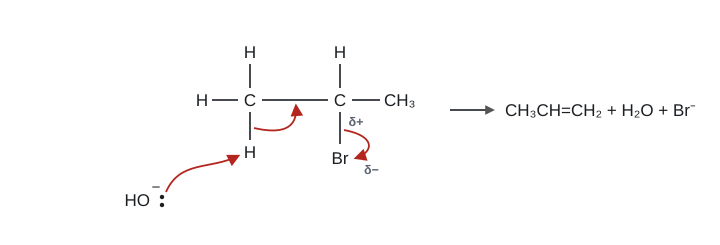
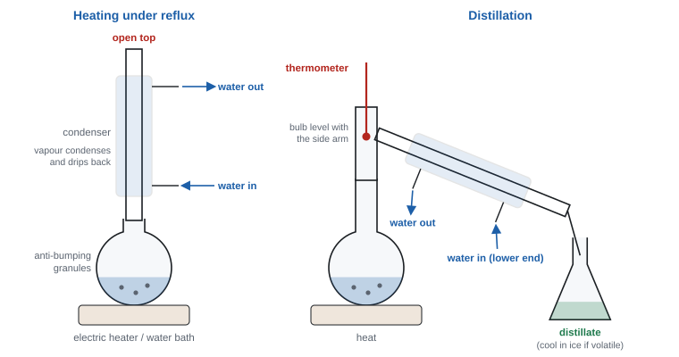
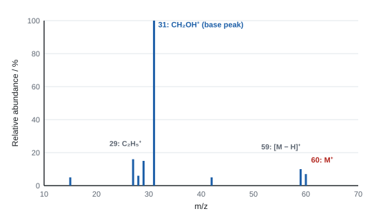

Halogenoalkanes, alcohols and spectra
Swap one hydrogen in an alkane for a halogen or an –OH group and the molecule suddenly has a polar bond that other species can attack. This topic follows what happens next: how halogenoalkanes are substituted or lose HX to give alkenes, how alcohols are oxidised, halogenated and dehydrated, how the products are separated and purified in the lab, and how mass spectra and infrared spectra tell you which molecule you have made.
Spec10.1Classifying reactions
Classify organic reactions (including the Unit 1 ones) as addition, elimination, substitution, oxidation, reduction, hydrolysis or polymerisation.
The seven types
| Type | What happens | Examples |
|---|---|---|
| Addition | two molecules join to make one product; a double bond opens | ethene + Br₂ → 1,2-dibromoethane; ethene + HBr; ethene + H₂O (steam) |
| Elimination | a small molecule (H₂O, HX) is removed from one molecule, leaving a C=C | halogenoalkane + ethanolic KOH → alkene; alcohol + conc. H₃PO₄ → alkene |
| Substitution | one atom or group is swapped for another | alkane + Cl₂ (UV) → chloroalkane + HCl; halogenoalkane + OH⁻ → alcohol + X⁻ |
| Oxidation | gain of O / loss of H (or electrons) | alcohol + acidified K₂Cr₂O₇; combustion; alkene + acidified KMnO₄ → diol |
| Reduction | gain of H / loss of O | alkene + H₂ (Ni catalyst) → alkane |
| Hydrolysis | a bond is split by water (or OH⁻) | halogenoalkane + H₂O or OH⁻ → alcohol |
| Polymerisation | many small monomers join into a long chain | ethene → poly(ethene) (addition polymerisation) |
- One reaction can fit more than one label:
- halogenoalkane + OH⁻ → alcohol is substitution and hydrolysis;
- alkene + H₂ is addition and reduction;
- alcohol + conc. H₃PO₄ is elimination, also called dehydration.
- Answer with the label the question is after. If it asks for the type of reaction, one word (e.g. "elimination") is enough; if it asks for the mechanism, add the attacking species: "nucleophilic substitution", "electrophilic addition", "free-radical substitution".
- A table of reagent, solvent and type (WCH12 Oct 2020): KOH(aq) → substitution; NH₃ in ethanol → substitution; KCN in ethanol → substitution; KOH in ethanol → elimination. "Nucleophilic" is ignored for the substitutions; "electrophilic" or "free radical" is penalised.
- "elimination": DO NOT AWARD "addition–elimination" or "nucleophilic elimination" (WCH12 Jan 2025, Jun 2024).
- IGNORE "dehydration" for elimination and "displacement" for substitution; DO NOT AWARD "dehydrogenation" (WCH12 Jun 2022).
Often asked as: name the type of reaction for a given equation or reagent, often in a reaction-scheme question.
Calling the halogenoalkane + ethanolic KOH reaction "nucleophilic substitution". It's elimination (the most common wrong answer, WCH12 Jan 2025 report).
Giving a mechanism when the question asked only for the type.
Spec10.2Reaction mechanisms
Understand what a reaction mechanism is.
Equation v mechanism
- An equation shows only the starting materials and the products.
- A mechanism shows how the reaction happens, step by step: which bonds break, which form, and in what order, using curly arrows to show where electrons go.
- Mechanisms explain why reactions follow patterns: reagents that react the same way follow the same mechanism (all primary halogenoalkanes with OH⁻, for example).
Curly arrows
- A full-headed curly arrow shows the movement of a pair of electrons. These are the arrows in every Topic 10 mechanism.
- A half-headed arrow (fish-hook) shows the movement of one electron, as in free-radical reactions (Unit 1).
- Rules:
- an arrow starts at a lone pair or at the middle of a covalent bond (where the electrons are), never at a charge or an atom's symbol on its own;
- it ends at the atom the electrons go to (to form a new bond) or just past an atom (when it leaves as an ion).
- Show partial charges (δ+ / δ−) on polar bonds and full charges on ions.
- "The curly arrow should start from a covalent bond or a lone pair" (WCH12 Jun 2023 report). Half-arrows are penalised once.
- An arrow starting from the negative charge of OH⁻ instead of a lone pair loses the mark (WCH12 Oct 2021).
Often asked as: draw a mechanism; spot what's missing from a given mechanism ("identify the omissions", WCH12 Jan 2022).
Arrows drawn to show where an atom moves, not where the electron pair moves (e.g. an arrow from H to O, when it should go from O's lone pair to H).
Fish-hook arrows in a nucleophilic substitution.
Spec10.3Heterolytic bond breaking: electrophiles and nucleophiles
Understand that heterolytic bond breaking produces species that act as electrophiles or nucleophiles.
Two ways a covalent bond can break
| Homolytic fission | Heterolytic fission | |
|---|---|---|
| Electrons | one electron to each atom | both electrons to one atom |
| Products | two radicals (unpaired electron, e.g. Cl•) | a positive ion and a negative ion |
| Arrows | half-headed | full-headed |
| Typical when | non-polar bond (Cl–Cl, C–H) with UV light | polar bond (C–Br, H–Br) |
| Leads to | free-radical reactions | electrophilic and nucleophilic reactions |
- In heterolytic fission the electrons go to the more electronegative atom. For C–Br: CH₃CH₂–Br → CH₃CH₂⁺ + Br⁻.
- The ions formed are reactive:
- the positive species is electron-poor: it can accept a pair of electrons, so it's an electrophile (e.g. a carbocation, H⁺, NO₂⁺);
- the negative species has a spare lone pair: it can donate a pair of electrons, so it's a nucleophile (e.g. Br⁻, OH⁻).
- A carbocation is an ion with a positive charge on a carbon atom. It has three bonding pairs and no lone pairs around the C⁺, so it is trigonal planar (bond angle 120°).
- "heterolytic (bond) fission" and "the (pair of) electrons in the C–Br bond are transferred to the bromine atom". There must be a mention of two electrons (WCH12 Jun 2023).
- Carbocation shape: "trigonal planar" because "three bond pairs (and no lone pairs) arranged to minimise repulsion" (WCH12 Jun 2023).
Often asked as: name the type of bond breaking in the first step of a mechanism; give the shape of a carbocation intermediate.
Saying "the bond breaks and bromine takes an electron": it takes both electrons of the bond.
Stopping the shape explanation at "three bonded pairs". Say they repel equally and get as far apart as possible, giving 120°.
Spec10.4Nucleophiles
Know the definition of a nucleophile.
Definition
- A nucleophile is a species that donates a lone pair of electrons to an electron-deficient (δ+ or +) atom, forming a new covalent bond.
- "Nucleophile" means "nucleus-loving": it is attracted to positive centres, such as the δ+ carbon in a C–X bond.
- Every nucleophile has a lone pair. Many are negative ions, but some are neutral.
| Nucleophile | Where the lone pair is | Product with a halogenoalkane |
|---|---|---|
| OH⁻ | on O | alcohol |
| CN⁻ | on C | nitrile |
| NH₃ | on N (neutral molecule) | amine |
| H₂O | on O (neutral, weak) | alcohol |
| RNH₂ (an amine) | on N | secondary amine (unwanted side reaction) |
- The opposite is an electrophile: a species that accepts a pair of electrons (e.g. H⁺, Brδ+ in a polarised Br₂, a carbocation). Electrophiles attack electron-rich areas such as C=C (Unit 1).
- "electron pair donor", or "(species with a) lone pair that attacks the δ+ carbon" (WCH12 Jan 2022, Jan 2026). "Acts as a nucleophile" is accepted for the role of OH⁻ in substitution; just repeating "nucleophilic substitution" is ignored.
- An amine is a nucleophile because of the "lone pair on the nitrogen"; it can be substituted further because it still has "H atoms attached to N" (WCH12 Jun 2025).
Often asked as: define a nucleophile; state the role of OH⁻ in a given reaction (nucleophile in substitution, base in elimination).
"A nucleophile is a negative ion." NH₃ and H₂O are neutral nucleophiles. The key is the lone pair.
"Electron donor" without "pair".
Spec10.5Bond polarity and the type of mechanism
Understand how bond polarity decides the type of mechanism a compound undergoes.
Match the bond to the attacker
| Compound | Key bond | Polarity | Attacked by | Mechanism |
|---|---|---|---|---|
| Alkane | C–H, C–C | non-polar | radicals (Cl• from UV light) | free-radical substitution (homolytic fission) |
| Alkene | C=C | non-polar but a region of high electron density (the π bond) | electrophiles (Br₂, HBr) | electrophilic addition |
| Halogenoalkane | Cδ+–Xδ− | polar | nucleophiles (OH⁻, CN⁻, NH₃) | nucleophilic substitution (heterolytic fission) |
- Halogens are more electronegative than carbon, so the C–X bonding pair is pulled towards X. The carbon becomes δ+, the halogen δ−.
- The δ+ carbon attracts nucleophiles. The C–X bond then breaks heterolytically, and the halogen leaves as a halide ion, X⁻.
- So the polarity of a bond tells you where a reagent will attack and whether the bond breaks evenly or unevenly.
Electronegativity falls down Group 7 (F > Cl > Br > I), so C–F is the most polar bond and C–I the least. If polarity decided the rate, fluoroalkanes would react fastest. They don't: bond enthalpy decides the rate of hydrolysis (10.13).
- Dipoles: "δ+ on C, δ− on the halogen", shown on the C–X bond in every substitution mechanism.
Often asked as: part of a mechanism question; explain why a halogenoalkane reacts with nucleophiles but an alkane doesn't.
Putting the δ+ on the halogen. Writing full + and − charges on a polar bond in the starting molecule.
Spec10.6Naming and drawing halogenoalkanes
Name halogenoalkanes and draw their structural, displayed and skeletal formulae.
Naming rules
- Find the longest carbon chain containing the C–X carbon: it gives the stem (meth-, eth-, prop-, but-, pent-, hex-) + -ane.
- Halogens are prefixes: fluoro-, chloro-, bromo-, iodo-. Alkyl branches are prefixes too (methyl-, ethyl-).
- Number the chain to give the lowest numbers to the substituents.
- Put all prefixes in alphabetical order (bromo, chloro, ethyl, fluoro, iodo, methyl). Use di-, tri- for repeats (they don't count for alphabetical order).
- Commas between numbers, hyphens between numbers and words.
| Name | Structural formula | Class (10.7) |
|---|---|---|
| bromoethane | CH₃CH₂Br | primary |
| 1-bromopropane | CH₃CH₂CH₂Br | primary |
| 2-bromopropane | CH₃CHBrCH₃ | secondary |
| 1-bromo-2-methylpropane | (CH₃)₂CHCH₂Br | primary |
| 2-chloro-2-methylpropane | (CH₃)₃CCl | tertiary |
| 2-iodo-2-methylpropane | (CH₃)₃CI | tertiary |
| 2-chloro-3-methylbutane | CH₃CHClCH(CH₃)CH₃ | secondary |
| 1,2-dibromoethane | CH₂BrCH₂Br | primary (both) |
The three formula types
- Structural: enough to show the arrangement without drawing bonds, e.g. CH₃CHBrCH₃.
- Displayed: every atom and every bond drawn (including all C–H bonds).
- Skeletal: a zig-zag line; every corner and line end is a carbon; H atoms on carbon are not shown; the halogen is written at the end of its bond. 2-bromopropane is a "V" shape (three carbons) with Br on a line from the middle carbon.
- "2-chloro-3-methylbutane" (WCH12 Jan 2025). Missing or extra hyphens and commas are ignored; wrong alphabetical order isn't credited.
- "2-iodo-2-methylpropane": DO NOT AWARD "2-iodine-…" (WCH12 Oct 2024).
- Nitrile names count the C of the C≡N in the chain: (CH₃)₃CCN is 2,2-dimethylpropanenitrile (WCH12 Jun 2023).
Often asked as: name a compound from its skeletal formula; draw a displayed or skeletal formula from a name.
Writing "chloride", "chlorine" or "iodine" in the name instead of chloro- / iodo-.
Prefixes out of alphabetical order (methyl before chloro).
Missing H atoms in displayed formulae; drawing 2-bromopropane when 1-bromo-2-methylpropane was asked (WCH12 Jan 2024 report).
Spec10.7Primary, secondary and tertiary halogenoalkanes
Distinguish primary, secondary and tertiary halogenoalkanes.
Count the carbons on the C–X carbon
Look at the carbon that carries the halogen. Count how many other carbon atoms (alkyl groups) are bonded to it:
| Class | Carbons bonded to the C–X carbon | General | Example |
|---|---|---|---|
| Primary (1°) | one (or none, for CH₃X) | RCH₂X | 1-bromobutane |
| Secondary (2°) | two | R₂CHX | 2-bromobutane |
| Tertiary (3°) | three | R₃CX | 2-bromo-2-methylpropane |
- The four structural isomers of C₄H₉Br:
- 1-bromobutane CH₃CH₂CH₂CH₂Br: primary;
- 2-bromobutane CH₃CHBrCH₂CH₃: secondary;
- 1-bromo-2-methylpropane (CH₃)₂CHCH₂Br: primary (the Br carbon has only one C attached, even though the chain is branched);
- 2-bromo-2-methylpropane (CH₃)₃CBr: tertiary.
- The class controls how fast the halogenoalkane is hydrolysed (10.12).
- Define by the number of carbon atoms / alkyl groups attached to the carbon bonded to the halogen. "Branched" is accepted for tertiary in rate questions (WCH12 Jun 2024).
Often asked as: classify a given halogenoalkane; draw isomers of a formula and classify each.
Classifying by "how many halogens" or "where the halogen is on the chain".
Calling bromocyclohexane tertiary (it's secondary: the Br carbon has two C neighbours) (WCH12 Jun 2022 report).
Spec10.8Reactions of halogenoalkanes
Know the reactions of halogenoalkanes with (i) aqueous KOH (alcohols; OH⁻ as nucleophile), (ii) ethanolic KOH (alkenes by elimination; OH⁻ as base), (iii) aqueous silver nitrate in ethanol (water as nucleophile), (iv) ammonia in ethanol under pressure (amines), (v) KCN in ethanol (nitriles: lengthens the carbon chain).
Summary table
| Reagent and conditions | Role of reagent | Type | Product (from bromoethane, or as stated) |
|---|---|---|---|
| KOH(aq) or NaOH(aq), heat under reflux | OH⁻ = nucleophile | nucleophilic substitution (hydrolysis) | ethanol, CH₃CH₂OH |
| KOH in ethanol (ethanolic), heat under reflux | OH⁻ = base | elimination | alkene (from 2-bromopropane: propene) |
| AgNO₃(aq) in ethanol, warm | H₂O = nucleophile | nucleophilic substitution (hydrolysis) | alcohol + silver halide precipitate |
| excess NH₃ in ethanol, heat under pressure (sealed tube) | NH₃ = nucleophile | nucleophilic substitution | amine: ethylamine CH₃CH₂NH₂ |
| KCN in ethanol, heat under reflux | CN⁻ = nucleophile | nucleophilic substitution | nitrile: propanenitrile CH₃CH₂CN |
(i) Aqueous alkali → alcohol
CH₃CH₂Br + KOH → CH₃CH₂OH + KBr
Ionic: CH₃CH₂Br + OH⁻ → CH₃CH₂OH + Br⁻
- Water is the solvent, so OH⁻ ions are surrounded by water and attack the δ+ carbon. A little ethanol is often added to help the halogenoalkane mix with the water.
(ii) Ethanolic KOH → alkene (elimination)
CH₃CHBrCH₃ + KOH → CH₂=CHCH₃ + KBr + H₂O
- In ethanol (no water), OH⁻ acts as a base: it removes an H⁺ from a carbon next to the C–X carbon. H and X are lost from neighbouring carbons, and a C=C forms between them.
- The ethanol must be dry: any water would let OH⁻ act as a nucleophile and give the alcohol instead.
- If the C–X carbon has different neighbouring carbons with H atoms, you get more than one alkene. 2-bromobutane gives but-1-ene and but-2-ene (which exists as E and Z isomers): three alkenes in all.
- In practice substitution and elimination compete. Aqueous conditions and primary halogenoalkanes favour substitution; ethanolic conditions, heat and tertiary halogenoalkanes favour elimination.

(iii) Silver nitrate in ethanol → alcohol + precipitate
R–X + H₂O → R–OH + H⁺ + X⁻ then Ag⁺(aq) + X⁻(aq) → AgX(s)
- Water is a weak nucleophile, so this hydrolysis is slow enough to time. The halide ion released is caught by Ag⁺ as a precipitate: AgCl white, AgBr cream, AgI yellow.
- Ethanol is a solvent for both the halogenoalkane (which doesn't mix with water) and the aqueous silver nitrate, so they mix and react.
- This is the basis of the rate comparisons in 10.10 and Core Practical 5.
(iv) Ammonia → amine
CH₃CH₂Br + 2NH₃ → CH₃CH₂NH₂ + NH₄Br
- Conditions: excess concentrated ammonia in ethanol, heated under pressure in a sealed tube. Reflux isn't used because ammonia gas would escape through the condenser.
- The second NH₃ removes H⁺ from the intermediate (mechanism in 10.9), which is why the equation uses 2NH₃.
- Why excess ammonia? The amine product also has a lone pair on N, so it is a nucleophile too and can attack more halogenoalkane, giving secondary and tertiary amines. A large excess of NH₃ makes it much more likely that each halogenoalkane molecule meets NH₃, not the amine.
(v) Potassium cyanide → nitrile
CH₃CH₂Br + KCN → CH₃CH₂CN + KBr
- Conditions: KCN in ethanol, heat under reflux.
- The product, propanenitrile, has three carbons; bromoethane had two. Making a new C–C bond is a way of increasing the length of the carbon chain.
- Name nitriles by counting the C of –C≡N in the chain: CH₃CH₂CN is propanenitrile.
- KCN is highly toxic, and acids release toxic HCN gas.
- Substitution: "aqueous (solution)" (ALLOW aqueous ethanol); DO NOT AWARD "just water" (WCH12 Jun 2024).
- Elimination: "ethanolic / alcoholic (solution)" of KOH (ALLOW NaOH); DO NOT AWARD just "ethanol" or "alcohol" as the reagent. Heat/reflux ignored.
- Amine: "ammonia (ALLOW concentrated), heat under pressure, in alcoholic solution" or "in a sealed tube". DO NOT AWARD "heat under reflux" or "dilute / aqueous ammonia" (WCH12 Jun 2023, Jun 2025, Oct 2025).
- Nitrile: "C₄H₉Cl + KCN → C₄H₉CN + KCl", "pentanenitrile", "a way of extending the carbon chain / forming a new C–C bond" (WCH12 Oct 2024, Oct 2025).
- Dry ethanol: "to remove water" so as to "prevent (nucleophilic) substitution" / stop OH⁻ acting as a nucleophile (WCH12 Oct 2025).
- 6-mark compare (WCH12 Jun 2022, Jun 2025): both involve OH⁻; aqueous → substitution, OH⁻ is a nucleophile, alcohol formed; ethanolic → elimination, OH⁻ is a base, alkene(s) formed; two balanced equations. From 2-chlorobutane: butan-2-ol, and but-1-ene plus E- and Z-but-2-ene. Just "butene" scores only 1.
Often asked as: give reagents and conditions for a step in a reaction scheme; 6-mark comparison of aqueous and ethanolic KOH; state the role of OH⁻; name the nitrile.
Examined in past papers even though the spec doesn't list it.
- Elimination mechanism with OH⁻ as a base: lone pair on O → H on the carbon next to C–X; the C–H bond pair → the C–C bond to make C=C; the C–X bond pair → X (WCH12 Jan 2022). See the figure above.
- Silver(I) oxide in water as a source of OH⁻: Ag₂O + H₂O → 2Ag⁺ + 2OH⁻; it's less corrosive than NaOH and can be recovered (WCH12 Jun 2023).
- Volumes, limiting reagent and % yield for a halogenoalkane preparation using density (WCH12 Jun 2019, Jun 2022).
Writing "cyanide" or "hydroxide" without the metal: give KCN or KOH (WCH12 Oct 2020 report).
Missing "aqueous" for substitution, or "ethanol" / "under pressure" for the amine (WCH12 Jan 2024 report).
Suggesting NaOH to dehydrate an alcohol: that's halogenoalkane chemistry. Alcohols need conc. H₃PO₄ (10.17).
Drawing the nitrile as C–N or C=N, or naming it an amine or a "cyanide".
Spec10.9Nucleophilic substitution mechanisms (OH⁻ and NH₃)
Understand the mechanisms of nucleophilic substitution of primary halogenoalkanes with (i) aqueous KOH and (ii) ammonia. (SN1 and SN2 are named and tested in Unit 4.)
With hydroxide ions
- Draw the δ+ on the carbon and the δ− on the bromine of the C–Br bond.
- The lone pair on the oxygen of OH⁻ is attracted to the δ+ carbon. Draw a curly arrow from that lone pair to the carbon.
- At the same time the C–Br bond breaks heterolytically. Draw a curly arrow from the middle of the C–Br bond to the Br (or just past it).
- Products: CH₃CH₂OH (the O is now bonded to C) and Br⁻.
This happens in a single step: the new C–O bond forms as the C–Br bond breaks. (In Unit 4 you'll call this SN2.)
With ammonia
Step 1: substitution
- δ+ on C, δ− on Br.
- Curly arrow from the lone pair on the N of NH₃ to the δ+ carbon.
- Curly arrow from the C–Br bond to Br.
- Products: the intermediate ion CH₃CH₂NH₃⁺ (N now has four bonds and a positive charge) and Br⁻.
Step 2: loss of H⁺
- A second NH₃ molecule uses its lone pair to attack one of the H atoms on the N⁺: curly arrow from the lone pair on N to that H.
- Curly arrow from the N–H bond to the N⁺: the bond pair stays on the nitrogen, cancelling its charge.
- Products: ethylamine, CH₃CH₂NH₂, and NH₄⁺ (which pairs with Br⁻ as NH₄Br).
Overall: CH₃CH₂Br + 2NH₃ → CH₃CH₂NH₂ + NH₄Br
The lone pair on the nitrogen of NH3 attacks the δ+ carbon, and the C–Br bond breaks heterolytically. Nitrogen now has four bonds and no lone pair, so it carries a positive charge: the product of this step is the propylammonium ion, CH3CH2CH2NH3+, plus Br−.
A second ammonia molecule acts as a base. Its lone pair removes H+ from the N–H bond of the ammonium ion, and the electrons of that N–H bond return to nitrogen as a lone pair.
The ammonium ion and the bromide ion end up together as ammonium bromide, NH4Br, which is why two moles of ammonia appear in the overall equation.
Mechanism marks are given for separate items, so draw every one: δ+/δ−; each lone pair the arrow starts from (two dots on O or N); each arrow starting at a lone pair or bond; the charge on the intermediate; every product including Br⁻ and NH₄⁺.
OH⁻ (WCH12 Jun 2019, Oct 2021):
- dipole on C–X and arrow from the C–X bond to X (or just beyond);
- arrow from the lone pair on O of OH⁻ to the δ+ C (not from the minus sign);
- both products. KCl is allowed if K⁺ is shown. A covalent K–O bond in KOH loses the mark. A transition state is not needed.
NH₃ (WCH12 Jun 2025, six marking points for 3 marks):
- dipole on C–Br;
- arrow from the lone pair on N of NH₃ to the correct C;
- arrow from C–Br to Br;
- arrow from an N–H bond of the intermediate to N;
- arrow from the lone pair on a second NH₃ to H on the intermediate;
- Br⁻ and NH₄⁺ shown (or NH₄Br).
A missing lone pair, a charge on NH₃ and fish-hook arrows are each penalised once.
Often asked as: draw the mechanism (3–4 marks); find the omissions in a drawn mechanism ("lone pair on N", "δ+ on C").
Examined in past papers even though the spec doesn't list it.
SN1 for tertiary halogenoalkanes. WCH12 papers often use tertiary compounds and accept this mechanism (WCH12 Jun 2023, Oct 2021):
- The C–Br bond in 2-bromo-2-methylpropane breaks heterolytically on its own: arrow from the C–Br bond to Br. This gives a tertiary carbocation (CH₃)₃C⁺ (trigonal planar) and Br⁻. This is the slow step.
- The lone pair on O of OH⁻ (or H₂O) attacks the C⁺: arrow from the lone pair to the positive carbon. Product: (CH₃)₃COH.
Tertiary carbocations are the most stable because the three alkyl groups push electron density towards the C⁺ (WCH12 Jan 2020). Primary halogenoalkanes react by the one-step route above.
The bond formed when NH₃ accepts H⁺ in step 2 is a dative covalent bond: N's lone pair goes into the empty orbital of H⁺ (WCH12 Jun 2021).
Drawing ammonia with a negative charge, or the lone pair on an H instead of N (WCH12 Oct 2020, Jun 2022, Jan 2024 reports).
Missing the second NH₃ step, or leaving out Br⁻ and NH₄⁺.
Arrows that show an H atom moving (from H to N) instead of the electron pair.
Arrows aimed at the C–C bond instead of the carbon atom.
Spec10.10Comparing rates of hydrolysis from experimental data
Use observations and data to compare the relative rates of hydrolysis of (i) primary, secondary and tertiary isomers of a halogenoalkane, and (ii) primary chloro-, bromo- and iodoalkanes, using aqueous silver nitrate in ethanol.
How the comparison works
- The halogenoalkane is warmed with aqueous silver nitrate dissolved in ethanol. Water slowly hydrolyses it, releasing X⁻ ions:
- R–X + H₂O → R–OH + H⁺ + X⁻
- Ag⁺(aq) + X⁻(aq) → AgX(s)
- The time for a precipitate to first appear measures the rate: shorter time → faster hydrolysis. Rate ∝ 1/time (9.3).
- The precipitate colour tells you which halogen was present.
| Halogenoalkane | Precipitate | Colour | Speed |
|---|---|---|---|
| 1-chlorobutane | AgCl | white | slowest (may take a long time) |
| 1-bromobutane | AgBr | cream | faster |
| 1-iodobutane | AgI | yellow | fastest |
| Isomer of C₄H₉Br | Class | Speed |
|---|---|---|
| 1-bromobutane | primary | slowest |
| 2-bromobutane | secondary | in between |
| 2-bromo-2-methylpropane | tertiary | fastest (precipitate almost at once) |
- To make the comparison fair, keep the same volume (or number of drops) of each halogenoalkane, the same volume and concentration of AgNO₃, the same volume of ethanol and the same temperature (water bath).
- Fluoroalkanes give no precipitate in a reasonable time: the C–F bond is too strong.
- What to measure: "time taken for the (first appearance of the) precipitate (of silver halide) to form" (WCH12 Oct 2021).
- 6-mark (WCH12 Oct 2020) on 1-bromobutane, 2-bromobutane and 2-bromo-2-methylbutane: nucleophilic substitution; silver halide precipitate; time depends on C–halogen bond strength; bond enthalpy decreases down Group 7 (larger atoms); rate 1° < 2° < 3°; classify each compound. Wrong precipitate colours, or reasons based on electronegativity or intermolecular forces, lose a mark.
- Two opposing factors (WCH12 Jun 2022): 2-chloro-2-methylpropane "should react faster because it is tertiary"; 1-iodobutane "should react faster because the C–I bond enthalpy is lower than C–Cl"; so "it is not possible to predict" which wins.
Often asked as: describe how to compare rates; predict and explain the order; interpret times or a table of results; identify the halogen from the precipitate colour.
"A stronger bond makes a faster reaction" (WCH12 Jan 2022 report): the weaker C–X bond breaks more easily.
Swapping the precipitate colours, or giving only formulae when colours were asked.
Describing the practical when the question asked you to compare and explain.
Calling the halogenoalkane itself a "carbocation".
Spec10.11Core Practical 5: rates of hydrolysis of halogenoalkanes
Investigate the rates of hydrolysis of some halogenoalkanes.
Core practical 5: method in brief
Part 1: chloro v bromo v iodo
- Label three test tubes. Put 1 cm³ of ethanol in each.
- Add the same number of drops (e.g. 3) of 1-chlorobutane, 1-bromobutane and 1-iodobutane, one to each tube.
- Stand the tubes, and a tube of 0.05 mol dm⁻³ silver nitrate solution, in a water bath at about 50–60 °C for a few minutes so everything reaches the same temperature.
- Add 1 cm³ of the warm silver nitrate to each tube, shake, and start the clock.
- Record the time for a precipitate to first appear in each tube, and its colour.
Part 2: primary v secondary v tertiary
Repeat with 1-bromobutane, 2-bromobutane and 2-bromo-2-methylpropane (same halogen, so only the structure changes).
Variables
| Independent | Dependent | Control |
|---|---|---|
| the halogen (part 1) or the class of halogenoalkane (part 2) | time for a precipitate to appear | volume of halogenoalkane, volume of ethanol, volume and concentration of AgNO₃, temperature of the water bath, size of test tubes |
Processing results
Worked example: from times to relative rates
Times for a precipitate: 1-iodobutane 30 s, 1-bromobutane 240 s, 1-chlorobutane no precipitate after 1200 s.
Rate ∝ 1/t: iodo 1/30 = 0.033 s⁻¹; bromo 1/240 = 0.0042 s⁻¹; chloro < 1/1200 = 0.00083 s⁻¹.
Iodo is about 8 times faster than bromo. Order: C–I > C–Br > C–Cl, matching bond enthalpies 228 < 290 < 346 kJ mol⁻¹.
(These numbers are illustrative; your class results will differ, but the order shouldn't.)
Safety
- Ethanol and halogenoalkanes are flammable: heat with a water bath or electric heater, no naked flames.
- Halogenoalkanes are harmful; avoid skin contact and breathing the vapour.
- Silver nitrate is an irritant and stains skin; wear gloves and eye protection.
Errors and improvements
- Judging the first appearance of a precipitate is subjective, especially for the faint cream and yellow ones: view against a black background, or use a colorimeter / light sensor.
- Drops aren't all the same size: use a graduated pipette to add equal volumes (or equal moles, since the compounds have different densities and Mr).
- Temperature drops when the tubes are taken out: keep them in the water bath while timing.
- Repeat and take a mean.
The water (not OH⁻) is the nucleophile here. That makes the reaction slow enough to compare by eye. If you used NaOH(aq) first, you'd have to acidify with dilute nitric acid before adding AgNO₃, otherwise brown silver oxide precipitates.
- "Time for the precipitate to form" (ALLOW "how fast"); "same temperature (water bath)"; "same volume/amount of halogenoalkane"; colours AgCl white, AgBr cream, AgI yellow.
Often asked as: how to measure the rate; identify control variables; predict the times for an unfamiliar halogenoalkane; explain the order (10.12, 10.13).
Spec10.12Reactivity trend: primary, secondary and tertiary
Know the trend in reactivity of primary, secondary and tertiary halogenoalkanes.
The trend
- For the same halogen, the rate of hydrolysis is tertiary > secondary > primary.
- Example: 2-bromo-2-methylpropane gives a cream precipitate with AgNO₃ in ethanol almost straight away; 1-bromobutane takes much longer.
Why (beyond the spec, but useful)
- Tertiary halogenoalkanes react by forming a carbocation first (SN1, see 10.9). A tertiary carbocation is the most stable, because its three alkyl groups push electron density towards the C⁺ and spread out the positive charge. So it forms most easily.
- Primary halogenoalkanes can't form a stable carbocation, so they react by the one-step route, where the nucleophile must reach the carbon directly.
- "tertiary halogenoalkanes react more quickly than primary" (WCH12 Jun 2024). ALLOW "tertiary carbocation is more stable than primary" and "methyl stabilisation of the positive charge" (WCH12 Jan 2022).
- DO NOT AWARD "tertiary halogenoalkanes react faster because they are more stable" (it's the carbocation that is more stable). IGNORE "more branched".
Often asked as: put isomers in order of rate; explain which of two compounds reacts faster (often with a second factor, the halogen, as well).
Saying the tertiary halogenoalkane is more stable. It's the tertiary carbocation that is stabilised.
For a "state" question, writing a long carbocation explanation: just give the order (WCH12 Oct 2024 report).
Spec10.13Reactivity trend: chloro-, bromo- and iodoalkanes (bond enthalpy)
Explain, using bond enthalpy, the trend in reactivity of chloro-, bromo- and iodoalkanes.
Bond enthalpy decides
| Bond | Mean bond enthalpy / kJ mol⁻¹ | Polarity | Rate of hydrolysis |
|---|---|---|---|
| C–F | 467 | most polar | no reaction |
| C–Cl | 346 | slow | |
| C–Br | 290 | faster | |
| C–I | 228 | least polar | fastest |
- Down Group 7 the halogen atom gets larger, so the C–X bond is longer and the shared pair is further from the halogen nucleus. The bond gets weaker (lower bond enthalpy).
- A weaker bond needs less energy to break, so the activation energy is lower and more collisions succeed. Iodoalkanes react fastest.
- Polarity would predict the opposite order: C–F is the most polar, so its carbon is the most δ+ and should attract nucleophiles best. The observed order shows that bond enthalpy matters more than polarity.
- "the C–I bond is weaker than C–Cl" / "C–I has a lower bond enthalpy", so iodoalkanes react faster (WCH12 Oct 2024, Jun 2024, Jan 2022).
- "C–Cl has a higher bond enthalpy (than C–Br)" so 1-chlorobutane is slower (WCH12 Jan 2022). Mark points may depend on the correct order.
Often asked as: explain why an iodoalkane reacts faster than a chloroalkane; combine with 10.12 for two compounds that differ in both class and halogen.
Explaining with electronegativity or polarity, or with "reactivity of the halogen" or "size of the element" without linking to bond strength (WCH12 Jan 2025 report).
Vague "the iodine bond is weaker": say "the C–I bond".
Spec10.14Core Practical 6: chlorination of 2-methylpropan-2-ol
Prepare 2-chloro-2-methylpropane from 2-methylpropan-2-ol and concentrated hydrochloric acid.
The reaction
(CH₃)₃COH + HCl → (CH₃)₃CCl + H₂O
- 2-methylpropan-2-ol is a tertiary alcohol. Tertiary alcohols react with concentrated HCl at room temperature, because they form a stable tertiary carbocation. Primary and secondary alcohols barely react this way (use PCl₅ for those: 10.17).
- 2-chloro-2-methylpropane boils at about 51 °C and has density about 0.84 g cm⁻³, so it forms the upper layer above the aqueous acid.
Core practical 6: method in brief
- In a fume cupboard, put about 10 cm³ of 2-methylpropan-2-ol and about 35 cm³ of concentrated hydrochloric acid into a separating funnel.
- Stopper, shake for several minutes (about 20 minutes in total), inverting and opening the tap often to release the pressure.
- Leave to stand until two layers separate. Run off and discard the lower (aqueous) layer.
- Add sodium hydrogencarbonate solution to the organic layer to neutralise leftover acid. Shake gently, venting often: CO₂ is produced. Discard the aqueous layer. Wash once with water.
- Run the organic layer into a dry conical flask and add anhydrous sodium sulfate (or MgSO₄ / CaCl₂). Swirl until the liquid is clear.
- Decant or filter into a clean flask and distil, collecting the fraction that boils at about 49–53 °C.
Why each step
| Step | Purpose |
|---|---|
| Separating funnel and shaking | the two liquids don't mix; shaking brings them into contact |
| Releasing pressure | HCl gas and (later) CO₂ build up pressure |
| NaHCO₃ wash | removes acid: NaHCO₃ + HCl → NaCl + H₂O + CO₂ |
| Anhydrous salt | removes water left in the organic layer |
| Distillation | separates the product from unreacted alcohol (b.p. 82 °C) and other impurities |
Worked example: percentage yield
10.0 cm³ of 2-methylpropan-2-ol (density 0.786 g cm⁻³, Mr 74.0) gave 6.50 g of 2-chloro-2-methylpropane (Mr 92.5).
Mass of alcohol = 10.0 × 0.786 = 7.86 g
Moles of alcohol = 7.86 ÷ 74.0 = 0.1062 mol (1 : 1 ratio, HCl in excess)
Theoretical mass of product = 0.1062 × 92.5 = 9.83 g
% yield = 6.50 ÷ 9.83 × 100 = 66.2%
Yield is lost when the layers are separated, in the washing, in the drying agent and in the distillation flask.
- Drying agent: "(anhydrous) sodium sulfate / magnesium sulfate / calcium chloride / calcium sulfate / calcium oxide" (ALLOW silica gel). DO NOT AWARD concentrated sulfuric acid, phosphoric acid, CuSO₄ or CaCO₃ (WCH12 Jun 2019).
Often asked as: name a drying agent; explain a step (NaHCO₃ wash, venting, distillation range); calculate the yield. No WCH12 paper (2019–2026) asked for the whole method.
Offering anhydrous copper(II) sulfate as a drying agent: it's a test for water, not a drying agent (WCH12 Jun 2019 report).
Giving two drying agents where one is wrong.
Not venting the funnel after adding NaHCO₃.
Spec10.15Naming and drawing alcohols
Name alcohols and draw their structural, displayed and skeletal formulae.
Naming rules
- The functional group is –OH (hydroxyl). General formula of the alcohol series: CnH2n+1OH.
- Name = stem for the longest chain containing the C–OH + -an- + position number + -ol: propan-1-ol, propan-2-ol.
- Number the chain to give the –OH the lowest number (it takes priority over alkyl and halogen prefixes).
- Two –OH groups: keep the "e": ethane-1,2-diol.
- Branches go in front as prefixes: 2-methylpropan-2-ol.
| Name | Structural formula |
|---|---|
| methanol | CH₃OH |
| ethanol | CH₃CH₂OH |
| propan-1-ol | CH₃CH₂CH₂OH |
| propan-2-ol | CH₃CH(OH)CH₃ |
| butan-2-ol | CH₃CH(OH)CH₂CH₃ |
| 2-methylpropan-1-ol | (CH₃)₂CHCH₂OH |
| 2-methylpropan-2-ol | (CH₃)₃COH |
| 4-methylhexan-2-ol | CH₃CH(OH)CH₂CH(CH₃)CH₂CH₃ |
| ethane-1,2-diol | HOCH₂CH₂OH |
- Displayed formula: show the O–H bond as well as every C–H; the O must join to C (C–O–H), not H to C.
- Skeletal formula: zig-zag carbon chain with OH written at the end of a line from the right carbon (write "OH", not just "O").
- "4-methylhexan-2-ol" (ALLOW 4-methyl-2-hexanol, 4-methylhexane-2-ol); DO NOT AWARD "4-methylhex-2-ol" (WCH12 Jun 2021).
- "2-methylpropan-1-ol", "butan-2-ol", "2-methylpropan-2-ol" (WCH12 Oct 2019). If a skeletal formula is asked for, displayed formulae aren't credited.
- A molecular formula like C₃H₇OH is not a structure and scores zero (WCH12 Jun 2023).
Often asked as: name or draw isomeric alcohols (C₄H₁₀O, C₆H₁₃OH); give the skeletal formula of a named alcohol.
"3-methylpropan-1-ol": a methyl on the end carbon just lengthens the chain. It's butan-1-ol (WCH12 Oct 2019 report). The branched one is 2-methylpropan-1-ol.
Leaving out the position number (butanol for butan-1-ol); drawing the same isomer twice (just rotated or flipped); drawing a cyclic alcohol when the formula doesn't allow it.
Joining the OH by its H in a displayed or skeletal formula.
Spec10.16Primary, secondary and tertiary alcohols
Distinguish primary, secondary and tertiary alcohols.
Classifying
| Class | C–OH carbon bonded to | H atoms on the C–OH carbon | Example |
|---|---|---|---|
| Primary | one other C (or none, methanol) | two (three for methanol) | ethanol, propan-1-ol |
| Secondary | two other C | one | propan-2-ol, butan-2-ol |
| Tertiary | three other C | none | 2-methylpropan-2-ol |
The four alcohols with formula C₄H₉OH:
| Name | Class |
|---|---|
| butan-1-ol | primary |
| 2-methylpropan-1-ol | primary |
| butan-2-ol | secondary |
| 2-methylpropan-2-ol | tertiary |
- The class decides what oxidation gives (10.18): primary → aldehyde → carboxylic acid; secondary → ketone; tertiary → no reaction. The number of H atoms on the C–OH carbon is what matters, because oxidation removes one of them.
- Secondary: "the carbon (atom) attached to the OH group is attached to two other carbon atoms / alkyl groups", or "has one hydrogen atom" (WCH12 Oct 2025). DO NOT AWARD "hydroxide group" or any mention of a carbocation.
- Jan 2026: define all three classes (by H atoms or by R groups) and give a correct example of each.
Often asked as: classify an alcohol; draw one example of each class for a given formula; explain why a tertiary alcohol isn't oxidised.
"Primary means the OH is on the end carbon" (WCH12 Oct 2022 report). It's about how many carbons are attached to the C–OH carbon. 2-methylpropan-1-ol has a branched chain but is still primary.
Writing "hydroxide" for the –OH group: hydroxide is the OH⁻ ion.
Spec10.17Reactions of alcohols: combustion, halogenation, dehydration
Know the reactions of alcohols with (i) oxygen (combustion), (ii) halogenating agents: PCl₅ (also a test for –OH), 50% concentrated sulfuric acid with KBr, and red phosphorus with iodine, and (iii) concentrated phosphoric acid to make alkenes by elimination. Mechanisms not needed.
(i) Combustion
- Alcohols burn in plenty of oxygen to give CO₂ and H₂O:
- CH₃CH₂OH(l) + 3O₂(g) → 2CO₂(g) + 3H₂O(l)
- C₃H₇OH(l) + 4½O₂(g) → 3CO₂(g) + 4H₂O(l)
- Balance O last: remember the alcohol already contains one O.
- Ethanol is used as a (bio)fuel; it burns with a clean blue flame.
(ii) Halogenation: replacing –OH with a halogen
| Halogenoalkane made | Reagent and conditions | Equation (ethanol, or as stated) |
|---|---|---|
| Chloroalkane | PCl₅, room temperature, dry | CH₃CH₂OH + PCl₅ → CH₃CH₂Cl + POCl₃ + HCl |
| Bromoalkane | KBr + 50% concentrated H₂SO₄, heat (HBr made in situ) | KBr + H₂SO₄ → KHSO₄ + HBr; CH₃CH₂OH + HBr → CH₃CH₂Br + H₂O |
| Iodoalkane | red phosphorus + iodine, warm under reflux (PI₃ made in situ) | 2P + 3I₂ → 2PI₃; 3CH₃CH₂OH + PI₃ → 3CH₃CH₂I + H₃PO₃ |
| Chloroalkane (tertiary only) | concentrated HCl, room temperature | (CH₃)₃COH + HCl → (CH₃)₃CCl + H₂O (Core Practical 6) |
- PCl₅ as a test for –OH: add solid PCl₅ to the dry sample. Steamy (misty) white fumes of HCl are given off. They turn damp blue litmus red and form white smoke (NH₄Cl) with ammonia on a glass rod.
- Water and carboxylic acids (which also contain –OH) give the same result, so the sample must be dry, and the test shows –OH, not specifically an alcohol.
- Why 50% sulfuric acid? Concentrated H₂SO₄ is an oxidising agent: it would oxidise some of the HBr to bromine (Topic 8). Diluting it to about 50% reduces this.
(iii) Dehydration (elimination) with concentrated phosphoric acid
CH₃CH₂OH → CH₂=CH₂ + H₂O (conc. H₃PO₄, heat; write the catalyst above the arrow)
- A molecule of water is eliminated from neighbouring carbons (the –OH and an H next to it), leaving a C=C.
- Concentrated H₃PO₄ is a catalyst: it's preferred to conc. H₂SO₄ because it causes fewer side reactions (H₂SO₄ is oxidising and chars the alcohol).
- The alkene is usually distilled off as it forms.
- If the C–OH carbon has two different neighbouring carbons with H atoms, you get a mixture: butan-2-ol → but-1-ene + E-but-2-ene + Z-but-2-ene.
- PCl₅ test: "misty fumes evolved (that turn damp blue litmus red / form white smoke with ammonia)". ALLOW steamy / white fumes; PCl₃ allowed. DO NOT AWARD "white smoke" unless ammonia is involved. IGNORE "gas / hydrogen given off" (WCH12 Jun 2019).
- Equation: "C₅H₁₁OH + PCl₅ → C₅H₁₁Cl + POCl₃ + HCl" (ACCEPT PCl₃O) (WCH12 Jan 2020).
- Bromination: "50% / concentrated sulfuric acid and potassium bromide". ALLOW P + Br₂, PBr₃, PBr₅. DO NOT AWARD dilute sulfuric acid (WCH12 Jun 2021).
- Chlorination: PCl₅, or concentrated HCl, SOCl₂, PCl₃. IGNORE just "HCl" (WCH12 Jun 2021).
- Dehydration: "(concentrated) phosphoric(V) acid / H₃PO₄"; ACCEPT concentrated H₂SO₄ or aluminium oxide. DO NOT AWARD dilute sulfuric acid (WCH12 Jan 2020).
Often asked as: reagents for converting an alcohol to a halogenoalkane or alkene; equations; the test for –OH; 6-mark choice of the best test for an alcohol group.
Examined in past papers even though the spec doesn't list it.
- Making a chloroalkane from an alcohol with PCl₅ is better than adding HCl to an alkene: it's one step and gives no isomeric by-products (WCH12 Jan 2020).
- Choosing a test for –OH (WCH12 Jun 2024): acidified dichromate fails for a tertiary alcohol; acidified KMnO₄ also reacts with C=C; PCl₅ works for all three classes.
- Other –OH tests: sodium gives effervescence (H₂); Lucas' reagent turns cloudy at once with tertiary alcohols (WCH12 Jun 2019).
- Bioethanol: renewable; fermentation must be anaerobic so the ethanol isn't oxidised; water in fuel ethanol causes corrosion and lowers energy per litre (WCH12 Oct 2021).
"Add HCl" without "concentrated" (WCH12 Jan 2021 report).
Suggesting NaOH to dehydrate an alcohol (WCH12 Jan 2020 report).
Drawing the same alkene twice (rotated) as two isomers; claiming E/Z isomers for an alkene that can't have them.
Spec10.18Oxidation of alcohols with acidified potassium dichromate(VI)
Know that acidified potassium dichromate(VI) oxidises (i) primary alcohols to aldehydes (positive with Benedict's or Fehling's) if distilled as they form, (ii) primary alcohols to carboxylic acids (positive with Na₂CO₃ or NaHCO₃) if heated under reflux, and (iii) secondary alcohols to ketones. [O] may be used in equations.
The oxidising agent
- Potassium dichromate(VI), K₂Cr₂O₇, in dilute sulfuric acid. Name the acid: "acidified" alone isn't enough.
- Colour change: orange (Cr₂O₇²⁻, Cr +6) → green (Cr³⁺, Cr +3). The dichromate is reduced while the alcohol is oxidised.
- Half-equation: Cr₂O₇²⁻ + 14H⁺ + 6e⁻ → 2Cr³⁺ + 7H₂O
- In organic equations write the oxidising agent as [O].
What each class gives
| Alcohol | Product | Conditions | Equation (example) |
|---|---|---|---|
| Primary | aldehyde | distil off as it forms; alcohol in excess | CH₃CH₂CH₂OH + [O] → CH₃CH₂CHO + H₂O |
| Primary | carboxylic acid | heat under reflux; excess oxidising agent | CH₃CH₂CH₂OH + 2[O] → CH₃CH₂COOH + H₂O |
| Secondary | ketone | heat under reflux | CH₃CH(OH)CH₃ + [O] → CH₃COCH₃ + H₂O |
| Tertiary | no reaction | stays orange | – |
- Aldehyde v acid: why the conditions matter. The aldehyde is oxidised further to the acid if it stays in the flask. An aldehyde has a much lower boiling point than the alcohol (aldehyde molecules can't hydrogen-bond to each other), so it distils out as soon as it forms and escapes further oxidation. Under reflux, the aldehyde vapour condenses and runs back, so it is oxidised all the way to the acid.
- Tertiary alcohols have no H atom on the C–OH carbon, so they can't be oxidised this way: the mixture stays orange.
- Ketones aren't oxidised further, for the same reason.
Testing the products
| Product | Test | Positive result |
|---|---|---|
| Aldehyde | warm with Benedict's or Fehling's solution | blue solution → red(-brown) precipitate (Cu₂O) |
| Ketone | Benedict's / Fehling's | stays blue (no reaction) |
| Carboxylic acid | add sodium carbonate or sodium hydrogencarbonate | effervescence; the gas (CO₂) turns limewater milky |
- Acid with hydrogencarbonate: CH₃CH₂COOH + NaHCO₃ → CH₃CH₂COONa + H₂O + CO₂
- Reagents for the acid: "sodium / potassium dichromate(VI)" and "(dilute) sulfuric acid" and "(heat under) reflux". DO NOT AWARD potassium manganate(VII) or hydrochloric acid (WCH12 Oct 2020, Jun 2025).
- For the aldehyde: "(heat with) potassium dichromate(VI) and sulfuric acid", "distil", "so the aldehyde is not oxidised further / does not form a carboxylic acid". DO NOT AWARD reflux (WCH12 Jan 2026).
- Equations: "CH₃OH + 2[O] → HCOOH + H₂O"; "CH₃CH₂CH₂OH + 2[O] → CH₃CH₂COOH + H₂O"; going via the aldehyde in two equations is allowed.
- Colour change: "orange to green" (ALLOW orange to blue); DO NOT AWARD the reverse.
- Tertiary alcohols "cannot be oxidised"; a primary alcohol in the body is oxidised to a toxic aldehyde (WCH12 Jan 2020).
Often asked as: reagents and conditions for an aldehyde or acid; equations with [O]; colour change; tests for the products; why a tertiary alcohol doesn't react; 6-mark on making propanoic acid.
Examined in past papers even though the spec doesn't list it.
- 6-mark (WCH12 Jun 2019): higher concentration or temperature → faster rate (more frequent collisions, more particles with E ≥ Ea); excess oxidising agent and reflux ensure complete oxidation to the acid.
- IR can follow the oxidation: the O–H peak (3750–3200 cm⁻¹) shrinks and a C=O peak (1740–1700 cm⁻¹) appears (WCH12 Oct 2025).
- The orange/green chromium colours mask an indicator, so the acid made can't be titrated directly in the reaction mixture (WCH12 Jun 2019).
"Acidified potassium dichromate" with no acid named (WCH12 Jan 2025 report).
Using reflux to make an aldehyde (WCH12 Jan 2025 report).
Colour change backwards, or a wrong oxidation number for Cr.
Forgetting that tertiary alcohols don't react (WCH12 Oct 2022 report: over half scored nothing).
Spec10.19Techniques for preparing and purifying a liquid organic product
Understand (i) heating under reflux, (ii) solvent extraction with a separating funnel, (iii) distillation, (iv) drying with an anhydrous salt, (v) measuring a boiling temperature.

(i) Heating under reflux
- What: heat the mixture in a flask with a vertical condenser on top.
- Why: organic reactions are slow and need heating for a long time. The volatile reactants and products evaporate, condense and drip back into the flask, so nothing is lost and the reaction can go to completion.
- Details:
- add anti-bumping granules for smooth boiling;
- water goes in at the bottom of the condenser and out at the top, so the jacket stays full;
- the top is open: never heat a sealed system (pressure would build up and it could explode);
- heat with a water bath or electric heater, not a Bunsen, because organic vapours are flammable.
(ii) Extraction with a separating funnel
- Used to separate two liquids that don't mix (immiscible), e.g. an organic layer from an aqueous layer, or to wash an organic product.
- Shake with the stopper on, inverting and opening the tap regularly to release pressure (especially with NaHCO₃, which makes CO₂).
- Let the layers settle. The denser liquid is the lower layer. Run it off through the tap.
- Not sure which layer is which? Add a few drops of water: the layer it joins is the aqueous one.
- Washing: shake with sodium hydrogencarbonate (or sodium carbonate) solution to remove acid, then with water.
(iii) Distillation
- Separates a liquid from non-volatile impurities or from liquids with clearly different boiling points.
- The thermometer bulb is level with the side arm, so it reads the temperature of the vapour that is actually distilling.
- Sloping condenser, water in at the lower end.
- Collect the fraction that boils within about 2 °C of the product's boiling point; liquid coming over below or above that is a different substance.
- Fractional distillation (with a fractionating column) is used when boiling points are close.
(iv) Drying with an anhydrous salt
- Organic layers from a separating funnel contain a little water. Add an anhydrous salt: anhydrous sodium sulfate, magnesium sulfate or calcium chloride.
- Swirl. If the salt clumps together, add more; the liquid is dry when it turns from cloudy to clear and fresh salt moves freely.
- Decant or filter the dried liquid off the solid.
(v) Boiling temperature determination
- A pure liquid boils at a fixed, sharp temperature. Compare it with a data-book value to identify the product and check purity.
- Impurities change the boiling temperature and make it boil over a range.
- Method: distil the product (or heat a small sample in a tube in an oil bath) and record the steady thermometer reading while the liquid boils.
The usual purification order
reaction (reflux) → separate (separating funnel) → wash (NaHCO₃ / water) → dry (anhydrous salt) → distil (collect at the boiling point) → check purity (boiling temperature)
- Name the apparatus: "(reflux / Liebig) condenser". An answer that suggests a sealed system is not awarded (WCH12 Oct 2025).
- Why distillation fails to separate: "the boiling temperatures are (too) similar / close" (WCH12 Jun 2025).
- Why not reflux for the ammonia reaction: "ammonia (gas) would escape (from the condenser)" (WCH12 Jun 2022).
- Purifying bioethanol: "(fractional) distillation" (WCH12 Oct 2021).
Often asked as: reflux v distillation; name a piece of apparatus; why the system isn't sealed; choose a drying agent; why a separation won't work.
Sealing the top of a reflux condenser.
Water entering the condenser at the top (the jacket never fills).
Thermometer bulb dipping into the liquid during distillation.
Copper(II) sulfate as a drying agent.
Spec10.20Core Practical 7: oxidation of propan-1-ol to propanal and propanoic acid
Oxidise propan-1-ol to make propanal (by distillation) and propanoic acid (by heating under reflux).
Boiling points decide the method
| Compound | b.p. / °C | Why |
|---|---|---|
| propanal, CH₃CH₂CHO | 49 | no hydrogen bonding between its molecules |
| propan-1-ol, CH₃CH₂CH₂OH | 97 | hydrogen bonds |
| propanoic acid, CH₃CH₂COOH | 141 | hydrogen bonds (and a larger molecule) |
Core practical 7: method in brief
Propanal (distil as it forms)
- Make the oxidising mixture: potassium dichromate(VI) dissolved in dilute sulfuric acid, with anti-bumping granules, in a flask set up for distillation.
- Warm the mixture gently. Add propan-1-ol (in excess, so there isn't enough oxidant for a second oxidation) dropwise from a tap funnel.
- Keep the thermometer reading below about 60 °C and collect the distillate in a receiver cooled in ice (propanal is very volatile).
- Test the distillate with Benedict's or Fehling's solution: blue → red precipitate on warming shows an aldehyde.
Propanoic acid (heat under reflux)
- Put propan-1-ol with an excess of acidified potassium dichromate(VI) and anti-bumping granules in a flask with a reflux condenser.
- Heat under reflux for about 15–20 minutes. The colour turns from orange to green.
- Rearrange for distillation and distil off the propanoic acid (with some water).
- Test the distillate: add sodium hydrogencarbonate (or sodium carbonate): effervescence, gas turns limewater milky. Universal indicator shows it's weakly acidic.
Equations
CH₃CH₂CH₂OH + [O] → CH₃CH₂CHO + H₂O
CH₃CH₂CH₂OH + 2[O] → CH₃CH₂COOH + H₂O
Safety
- Potassium dichromate(VI) is toxic, carcinogenic and an oxidiser: wear gloves and eye protection.
- Propan-1-ol and propanal are flammable: use a water bath or electric heater.
- Concentrated reagents and hot liquids: anti-bumping granules, never heat a sealed apparatus.
- Propanal: "distil" so it is "not oxidised further"; reflux is not credited. Propanoic acid: "(heat under) reflux" with excess oxidant (WCH12 Jun 2021, Jan 2026).
- Colour change "orange to green"; condenser named; IR shows O–H (alcohol) disappearing and C=O appearing (WCH12 Oct 2025).
- Propanoic acid as a food preservative: below the limit "the food would go mouldy (it wouldn't preserve)", above it "the food tastes bad / becomes toxic" (WCH12 Jun 2019).
Often asked as: distil v reflux to get each product; equations; tests for each product; a Section C context on propanoic acid with a titration.
Using reflux for propanal, or distillation straight away for propanoic acid.
"Acidified dichromate" without naming sulfuric acid.
Spec10.21Mass spectra of organic compounds
Use the m/z of the molecular ion and the fragmentation pattern in a mass spectrum to suggest possible structures of simple organic compounds.
Reading a spectrum
- Molecules are ionised by losing an electron: M → M⁺ + e⁻. M⁺ is the molecular ion.
- The molecular ion peak is the peak with the highest m/z (ignore the tiny M+1 peak from ¹³C). Its m/z = relative molecular mass, Mr.
- Molecular ions are unstable and fragment: M⁺ → X⁺ + Y•. Only the positive ion X⁺ is detected; the neutral radical Y• isn't.
- The base peak is the tallest peak (set to 100%): the most abundant (most stable) ion.
- The fragments show which groups are in the molecule. Mr alone only gives the molecular formula, and isomers have the same Mr: the fragments tell them apart.
Common fragment ions and losses
| m/z | Fragment ion | Mass lost from M⁺ | Group lost |
|---|---|---|---|
| 15 | CH₃⁺ | 15 | CH₃ |
| 29 | C₂H₅⁺ or CHO⁺ | 17 | OH |
| 31 | CH₂OH⁺ | 18 | H₂O (alcohols) |
| 43 | C₃H₇⁺ or CH₃CO⁺ | 29 | C₂H₅ or CHO |
| 45 | COOH⁺ or CH₃CHOH⁺ | 35 / 37 | Cl |
| 57 | C₄H₉⁺ | 79 / 81 | Br |
Halogen isotope patterns
- Chlorine is about 75% ³⁵Cl and 25% ³⁷Cl, so a compound with one Cl shows two molecular-ion peaks 2 apart, heights 3 : 1 (e.g. chloroethane: 64 and 66).
- Bromine is about 50% ⁷⁹Br and 50% ⁸¹Br, so one Br gives two peaks 2 apart of equal height, 1 : 1 (e.g. bromomethane: 94 and 96).
- Two Cl atoms give M, M+2 and M+4 in the ratio 9 : 6 : 1.

Worked example: propan-1-ol or propan-2-ol?
Both have Mr = 60 (C₃H₈O), so the molecular ion at m/z 60 can't tell them apart.
Propan-1-ol, CH₃CH₂–CH₂OH: breaking the C–C bond next to the C–OH gives CH₂OH⁺, m/z 31 (base peak). Also C₂H₅⁺ at 29.
Propan-2-ol, CH₃–CH(OH)–CH₃: losing a CH₃ gives CH₃CHOH⁺, m/z 45 (base peak). There is no big peak at 31.
So a large peak at 31 → propan-1-ol; a large peak at 45 → propan-2-ol.
Worked example: propanal or propanone?
Both C₃H₆O, Mr = 58.
Propanone, CH₃COCH₃: strong peak at 43 (CH₃CO⁺, loss of CH₃) and at 15 (CH₃⁺).
Propanal, CH₃CH₂CHO: strong peaks at 29 (C₂H₅⁺ and CHO⁺) and 28; 57 (loss of H).
When you identify a fragment, write its formula with a + charge ("CH₂OH⁺", not "CH₂OH" and not just "m/z 31"). Missing charges are penalised.
- Fragments must be written as positive ions with a structure or formula, e.g. "m/z = 53 is (CH₂=C–CH=CH₂)⁺, loss of CH₃" (WCH12 Jun 2024). Missing charges penalised once.
- Isotopes: "chlorine isotopes (35 and 37) are in the ratio 3 : 1", so "two chlorine atoms give the ratio 9 : 6 : 1" (WCH12 Jun 2021). DO NOT AWARD ³⁶Cl.
Often asked as: identify the species causing given peaks; use M⁺ to choose between candidate compounds; explain a pattern of peaks for a compound containing Cl or Br; 6-mark combined MS + IR identification (WCH12 Jan 2025).
Examined in past papers even though the spec doesn't list it.
- Find Mr first from gas data (pV = nRT, convert kPa to Pa and cm³ to m³) or from % composition, then match to M⁺ (WCH12 Oct 2024, Jun 2025).
- Peaks for COCl₂ at 98, 100, 102 in the ratio 9 : 6 : 1, and the fragment CO³⁵Cl⁺ (WCH12 Jun 2021). (That mark scheme writes the abundances the wrong way round: chlorine is 75% ³⁵Cl.)
Taking the tallest peak (base peak) as the molecular ion.
Calculating the Mr of the candidate compounds wrongly (WCH12 Jan 2025 report): check your arithmetic.
Fragments written without a positive charge.
Spec10.22Infrared spectra
Use IR spectra (or IR data) to identify functional groups and predict absorptions for: C–H (alkanes, alkenes, aldehydes), C=C, O–H (alcohols, carboxylic acids), C=O (aldehydes, ketones, carboxylic acids), C–X and N–H (amines).
How IR works
- Covalent bonds vibrate (stretch and bend). Each type of bond absorbs infrared radiation at its own frequency, depending on the bond strength and the masses of the atoms.
- An IR spectrum plots % transmittance (y) against wavenumber / cm⁻¹ (x, running from 4000 on the left down to about 500). Absorptions show as dips (downward "peaks").
- Describe a peak by position (wavenumber), width (broad or sharp) and intensity (strong or weak).
- Below about 1500 cm⁻¹ is the fingerprint region: a complicated pattern unique to each compound. Matching it to a database spectrum confirms an identity.
Key absorptions (check against your Data Booklet)
| Bond | Where | Wavenumber / cm⁻¹ | Look |
|---|---|---|---|
| O–H | alcohols | 3750–3200 (hydrogen-bonded: about 3550–3230) | strong, broad |
| O–H | carboxylic acids | 3300–2500 | very broad, overlaps C–H |
| N–H | amines | 3500–3300 | medium, sharper than O–H |
| C–H | alkenes (=C–H) | 3095–3010 | medium |
| C–H | alkanes | 2962–2853 | strong (in almost every organic compound) |
| C–H | aldehydes (–CHO) | 2900–2820 and 2775–2700 | two weak peaks |
| C=O | aldehydes | 1740–1720 | strong, sharp |
| C=O | ketones | 1720–1700 | strong, sharp |
| C=O | carboxylic acids | 1725–1700 | strong, sharp |
| C=C | alkenes | 1669–1645 | variable |
| C–O | alcohols, acids, esters | 1300–1000 | strong |
| C–Cl | chloroalkanes | about 800–600 | strong |
| C–Br / C–I | bromo- / iodoalkanes | about 600–500 / about 500 |
Using it
- Look first for the big diagnostic peaks: O–H (broad, above 3200), C=O (sharp, about 1700), N–H, C=C.
- Combine them:
| Peaks seen | Compound type |
|---|---|
| broad O–H 3750–3200, no C=O | alcohol |
| C=O about 1720, no O–H | aldehyde or ketone (aldehyde if C–H at 2900–2700) |
| very broad O–H 3300–2500 and C=O about 1710 | carboxylic acid |
| C=C 1669–1645 and =C–H above 3000 | alkene |
| N–H 3500–3300 | amine |
| C–X below 800, nothing else special | halogenoalkane |
Worked example: following an oxidation
Propan-1-ol is heated under reflux with acidified K₂Cr₂O₇. How does the IR spectrum show that propanoic acid has formed?
Before: broad O–H (alcohol) absorption at 3750–3200 cm⁻¹; no C=O.
After: a strong C=O absorption appears at 1725–1700 cm⁻¹, and the O–H absorption moves to a very broad band at 3300–2500 cm⁻¹ (carboxylic acid O–H).
If propanal formed instead (distillation), there would be C=O at 1740–1720 cm⁻¹ and no O–H at all.
Worked example: an elimination
Butan-2-ol is dehydrated to butenes. IR evidence: the O–H absorption at 3750–3200 cm⁻¹ disappears; a C=C absorption appears at 1669–1645 cm⁻¹ (and =C–H at 3095–3010 cm⁻¹).
- Give the bond and its wavenumber range: "Both wavenumber ranges without bonds scores (1)"; a single specific wavenumber inside a range is accepted, but you still need the bond (WCH12 Jun 2023).
- Product v reactant: "O–H absent / C=O present". "One mark for two correct bonds identified." C–H peaks and the fingerprint region are ignored in these questions (WCH12 Jun 2025).
- Elimination: "O–H present in the reactant / absent in the product" and "C=C in the product" (WCH12 Jun 2019).
- Ranges are those in the Data Booklet; any value within the booklet range is accepted.
Often asked as: give one IR difference between a reactant and product; assign labelled peaks; choose the compound that matches a spectrum (6-mark with MS, WCH12 Jan 2025).
Examined in past papers even though the spec doesn't list it.
- The fingerprint region changes when a reaction happens, which can be used to show it has occurred (WCH12 Oct 2025, Oct 2020).
- The C=O in an acyl chloride (COCl₂) absorbs at a higher wavenumber (about 1795 cm⁻¹) than in ketones; mark schemes accept a wide range for unfamiliar C=O compounds (WCH12 Jun 2021).
Quoting a bond with no wavenumber, or a wavenumber with no bond.
Not using the Data Booklet ranges (WCH12 Jan 2025 report).
Confusing alcohol O–H (3750–3200) with carboxylic acid O–H (3300–2500, much broader).
Using C–H absorptions to tell compounds apart: nearly every organic compound has them.
Spec10.23Core Practical 8: analysis of some inorganic and organic unknowns
Use chemical tests to identify unknown inorganic and organic substances.
Inorganic tests
| Testing for | Method | Positive result |
|---|---|---|
| Group 1 / 2 cations | flame test: clean nichrome wire dipped in conc. HCl, then the solid, into a hot (blue) flame | Li⁺ red; Na⁺ yellow; K⁺ lilac; Ca²⁺ orange-red; Sr²⁺ red (crimson); Ba²⁺ pale green |
| NH₄⁺ | warm with NaOH(aq) | gas (NH₃) turns damp red litmus blue |
| CO₃²⁻ / HCO₃⁻ | add dilute acid | effervescence; CO₂ turns limewater milky |
| SO₄²⁻ | add dilute HCl, then BaCl₂(aq) | white precipitate (BaSO₄) |
| Cl⁻, Br⁻, I⁻ | add dilute HNO₃, then AgNO₃(aq); then NH₃(aq) | AgCl white, dissolves in dilute NH₃; AgBr cream, dissolves in conc. NH₃; AgI yellow, insoluble in conc. NH₃ |
- The HCl (for sulfate) and HNO₃ (for halides) remove carbonate ions first, which would also give a precipitate.
- Use HNO₃, not HCl, before AgNO₃: HCl would add Cl⁻ ions.
Organic tests
| Testing for | Reagent | Positive result |
|---|---|---|
| C=C (alkene) | bromine water (shake) | orange → colourless |
| –OH (alcohol, acid, water) | PCl₅ (dry sample) | steamy fumes of HCl; white smoke with NH₃ |
| 1° or 2° alcohol, or aldehyde | warm with acidified K₂Cr₂O₇ | orange → green (tertiary alcohols and ketones: stays orange) |
| Aldehyde | warm with Benedict's or Fehling's | blue → red precipitate (ketones: no change) |
| Carboxylic acid | NaHCO₃ or Na₂CO₃ | effervescence; CO₂ turns limewater milky |
| Halogenoalkane | warm with NaOH(aq), add dilute HNO₃, then AgNO₃(aq) | precipitate: white (Cl), cream (Br), yellow (I) |
Core practical 8: approach
- Record the appearance of each unknown (state, colour, smell only by wafting).
- Plan a sequence of tests that narrows the options: start with tests that split the groups (e.g. flame test, then anion tests; for organics: bromine water, then PCl₅, then dichromate, then Benedict's/Fehling's or NaHCO₃).
- Use small amounts (a few drops or a spatula tip) in test tubes; add reagents dropwise.
- Record observations (what you see), not just conclusions. "Effervescence" not "CO₂ produced".
- Combine results to identify each unknown. Use IR or mass spectra if they are given.
- Test for –OH (6-mark, WCH12 Jun 2024): PCl₅ gives misty fumes with all alcohols; acidified dichromate fails for a tertiary alcohol; acidified KMnO₄ also reacts with C=C.
- Acid test: "effervescence" with carbonate (WCH12 Oct 2020). Aldehyde test: Benedict's or Fehling's.
- Halide: AgNO₃ with dilute nitric acid, then ammonia solution (WCH12 Jan 2021).
- Describe observations: "a white precipitate", "effervescence", "orange to green", not just the product's name.
Often asked as: choose a test to tell two compounds apart and give the result for each; 6-mark test choice; combine tests with spectra.
Writing the name of a product ("silver chloride forms") when an observation is asked.
Giving the result for only one of the two compounds in a "distinguish" question: say what happens with each.
Testing a halogenoalkane directly with AgNO₃(aq) with no hydrolysis step, or skipping the HNO₃ after NaOH.
Quick checks
What is the name of CH3CHClCBr(CH3)CH3?
The longest chain has four carbons (butane). Numbering from the end nearest the Br gives the substituents positions 2, 2 and 3 rather than 2, 3 and 3. The prefixes then go in alphabetical order: bromo, chloro, methyl. Putting chloro first ignores the alphabetical rule.
1-Chlorobutane, 1-bromobutane and 1-iodobutane are warmed with aqueous silver nitrate in ethanol. Which statement explains the order in which the precipitates appear?
Water is the nucleophile, and breaking the C–X bond controls the rate. C–I (about 228 kJ mol−1) is much weaker than C–Cl (346 kJ mol−1), so the yellow AgI appears first. Polarity predicts the wrong order: C–Cl is more polar than C–I, yet slower.
The rate equation for the hydrolysis of a halogenoalkane by hydroxide ions is rate = k[RBr]. Which halogenoalkane is it most likely to be?
A rate that does not depend on [OH−] means hydroxide is not in the slow step: the SN1 route, where the C–Br bond breaks first to give a carbocation. Only the tertiary compound forms a stable enough carbocation. 1-Bromo-2-methylpropane is branched, but the carbon carrying the Br has only one other carbon on it, so it is primary.
2-Bromopropane is heated under reflux with potassium hydroxide dissolved in ethanol. What is the main organic product and what is the role of the hydroxide ion?
In ethanol the hydroxide ion removes an H+ from the carbon next to the C–Br carbon, so it acts as a base and an alkene forms by elimination. In water it would act as a nucleophile and give the alcohol.
Which alcohol does not change the colour of acidified potassium dichromate(VI) when heated with it?
2-Methylpropan-2-ol is tertiary: the carbon carrying the –OH has no hydrogen, so no C=O can form and the dichromate stays orange. 2-Methylpropan-1-ol is branched but primary (its –OH carbon has two hydrogens), so it is oxidised.
Why is propanal distilled off as it forms when propan-1-ol is oxidised?
An aldehyde is easily oxidised to a carboxylic acid. Propanal boils at 49 °C, well below the alcohol and the acid, because its molecules cannot hydrogen bond to each other, so it can be removed from the hot mixture as soon as it is made.
An IR spectrum has a strong, sharp absorption at 1715 cm−1 and no absorption between 2500 and 3600 cm−1 apart from sharp peaks near 2950 cm−1. The compound has Mr = 58. What is it?
The C=O trough at 1715 cm−1 rules out the alcohols, and the absence of any broad O–H trough rules out the acid (and the alcohols). Propanone, CH3COCH3, has Mr = 58. Prop-2-en-1-ol has the same Mr but would show a broad alcohol O–H trough and no C=O.
Which gas in the atmosphere does not absorb infrared radiation?
A bond absorbs IR only if its vibration changes the polarity of the molecule. N≡N joins two identical atoms, so stretching it never creates a dipole. CO2 is non-polar overall, but its asymmetric stretch and bending vibrations do produce a dipole, so it absorbs.